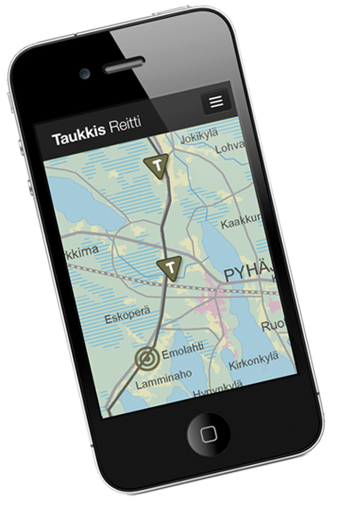

Taukkis on avointa dataa hyödyntävä taukopaikkaopas! Taukkiksen avulla löytää Suomessa liikkuessaan yksilöllisiä ja omia tarpeitaan vastaavia taukopaikkoja reittinsä varrelta. Taukkis hakee tietoja useista suomalaisista avoimen datan lähteistä ja esittää tiedot sekä reittikartalla että Taukkis-aikajanalla!